IBM Boot Logos
Retro IBM boot logos and the tools to put them into AMI UEFI firmware. They've been tested on ThinkPads and ASUS desktop boards. Each logo is a 24-bit BMP, ready to use as a POST splash screen or as a Windows boot logo. The boot screens further down are drawn the way BIOS-era screens were: a few flat colours with blend shades, at 640×480, 640×360 and the 672×378 logo size, plus 1280×960 and 1920×1080. The full instructions are in the README and the help file.

Eye-Bee-M on a ThinkPad X210Ai
This is Paul Rand's 1981 Eye-Bee-M rebus, flashed into the X210Ai's own firmware. It shows from the moment the laptop powers on.
Logos


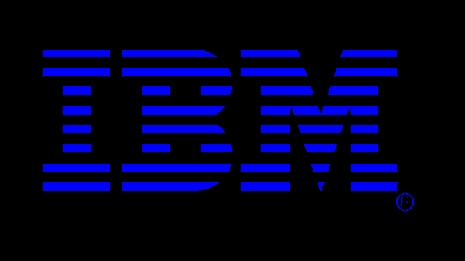
IBM 8-bar (Aptiva BIOS)
The original bitmap, extracted from an IBM Aptiva 2137 BIOS and drawn 1:1.


Aptiva 2139 boot screen
A rebuild of the IBM Aptiva 2139-E5Y startup screen, made with the genuine IBM bitmap. The 1024×768 and 960×720 versions fill a 4:3 screen, and their hard pixel edges compress to about half the size of the 672×378 one.


Boot screens: ThinkPad
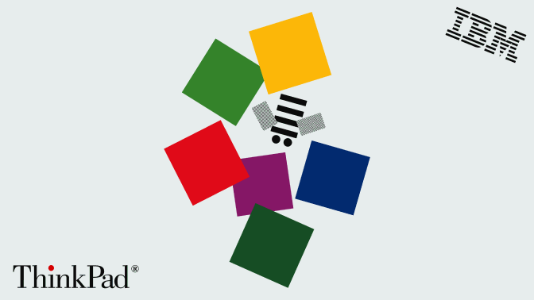
ThinkPad × Rand bee, tilted IBM
Paul Rand's bee poster with ThinkPad® in the corner and a tilted black 8-bar IBM. Chosen for the ThinkPad T530.


ThinkPad × Rand bee, IBM
The bee poster with ThinkPad® and a blue 8-bar IBM in the corners.


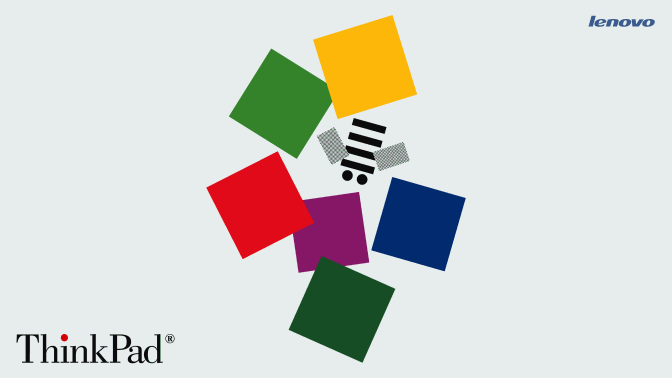
ThinkPad × Rand bee, lenovo
The bee poster with ThinkPad® and the 2003 lenovo logo in the corners.


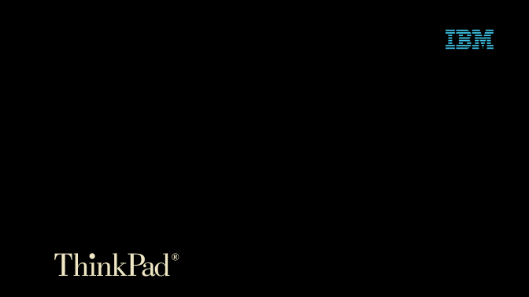
ThinkPad POST, IBM, black
The late-90s ThinkPad boot screen: cream serif ThinkPad®, cyan IBM.


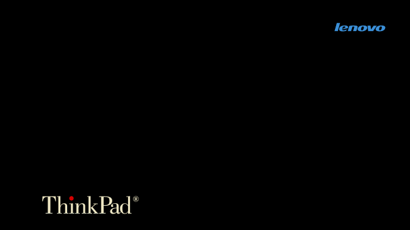


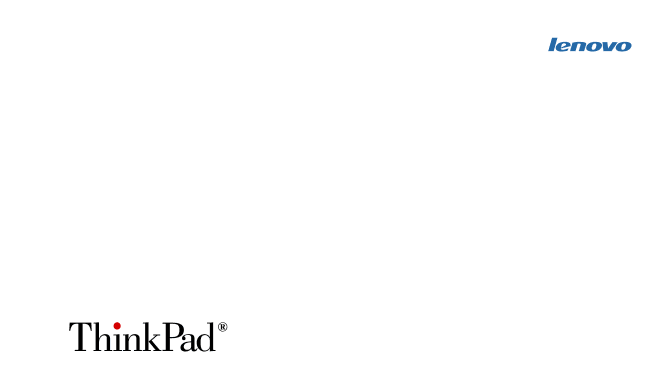


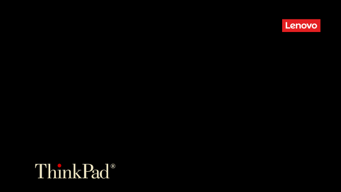


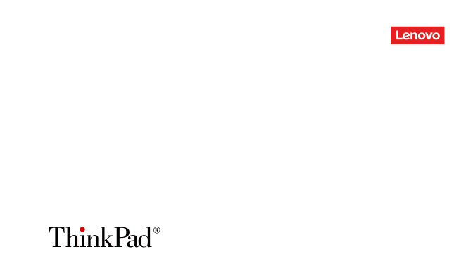
ThinkPad POST, Lenovo 2015, white
With the red-box Lenovo logo, on white.


Boot screens: Paul Rand
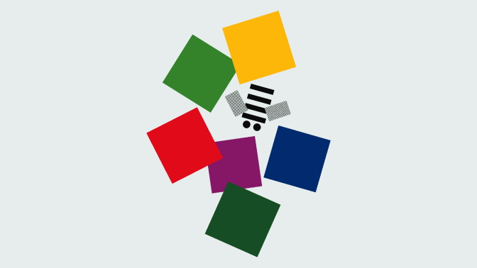
Bee poster
After Rand's Tokyo/Osaka Communication Arts poster: six tumbling squares around the striped bee.


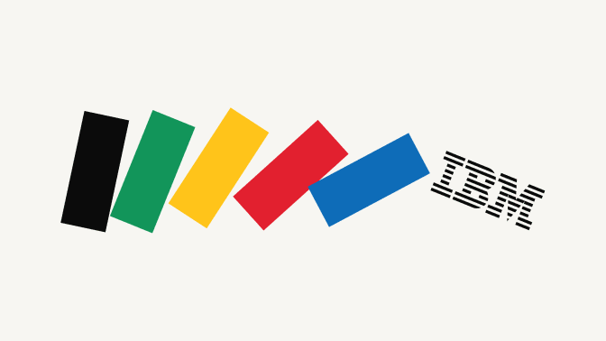


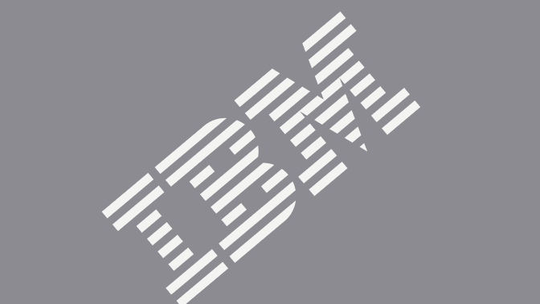
Diagonal, grey
The 8-bar on a diagonal, after Rand's 1973–84 IBM packaging.


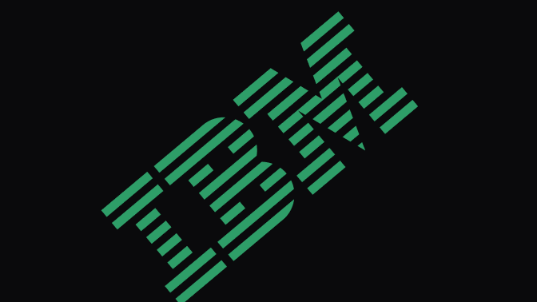


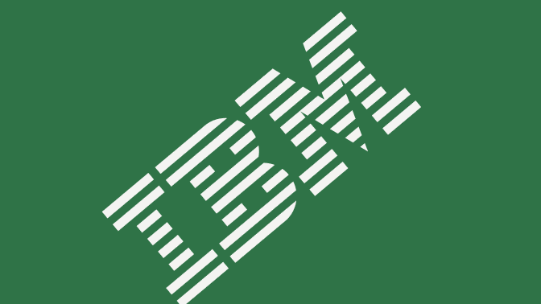


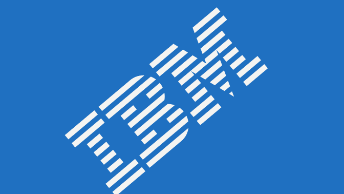


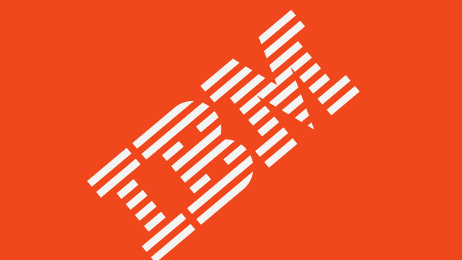


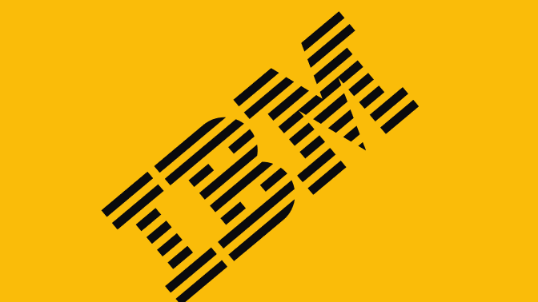


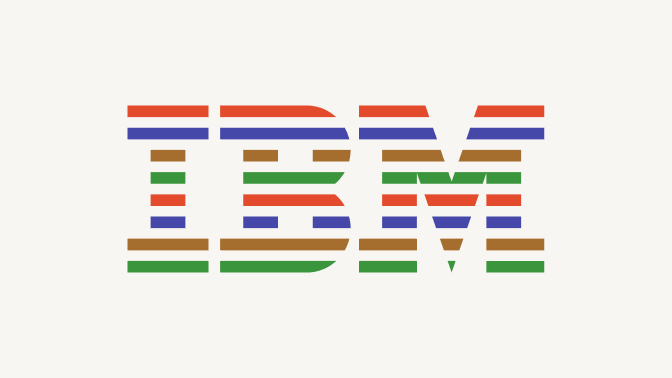
1991 Annual Report, white
The 8-bar with each bar its own colour, after the 1991 Annual Report cover.


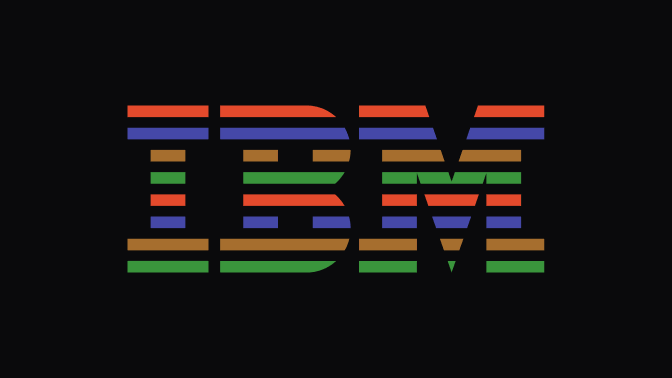


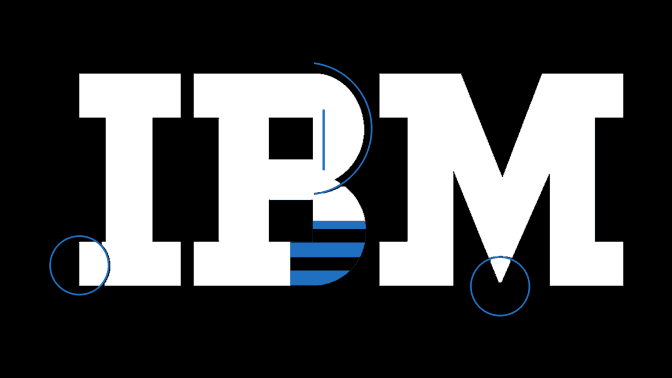
1956 wordmark, striped
Rand's 1956 IBM with construction marks in IBM blue and 8-bar stripes in the B.


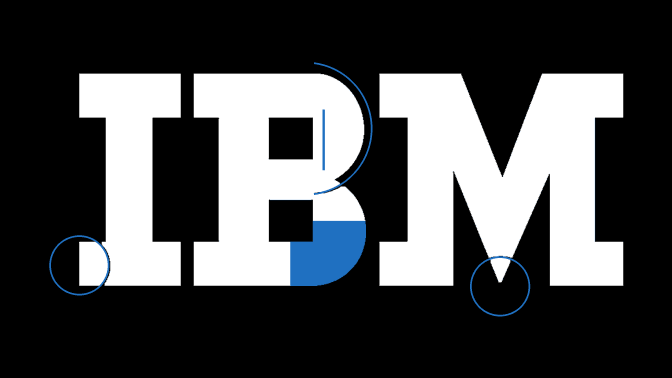


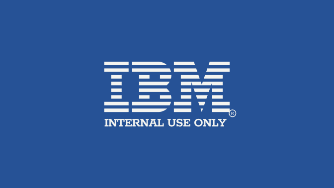
Internal Use Only, blue
After an 80s IBM INTERNAL USE ONLY sweatshirt. Subtext in Rokkitt.


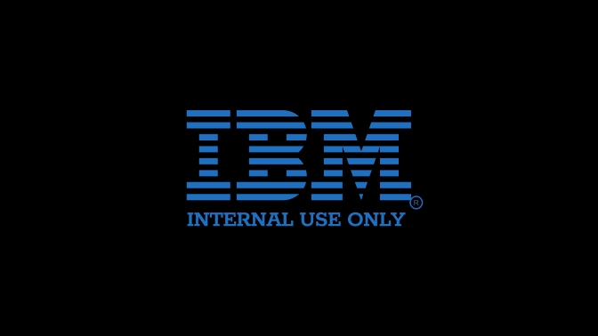


Boot screens: IBM PC
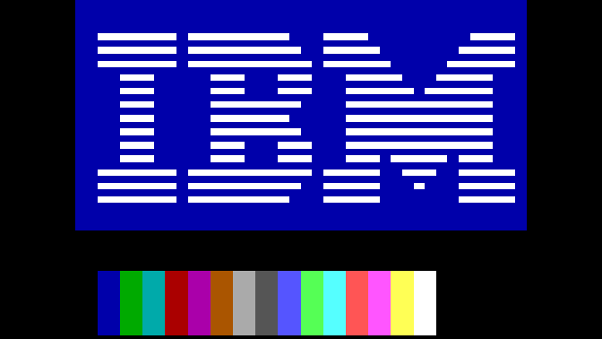
IBM PCjr
The PCjr power-on screen in the 16 CGA colours, pixel-exact on the 320×200 grid.


Boot screens: OS/2
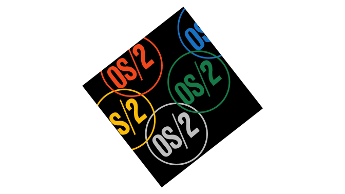


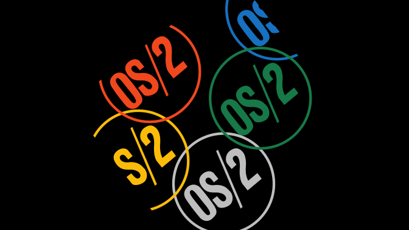


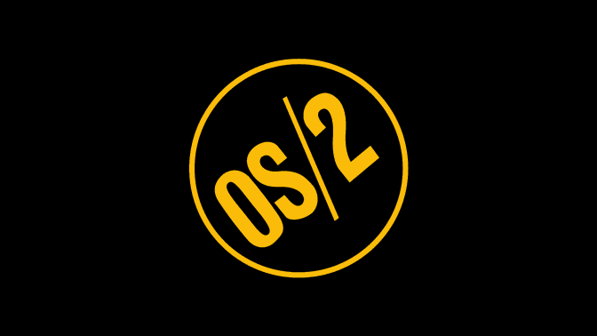


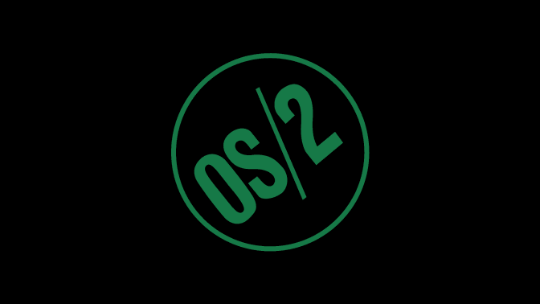


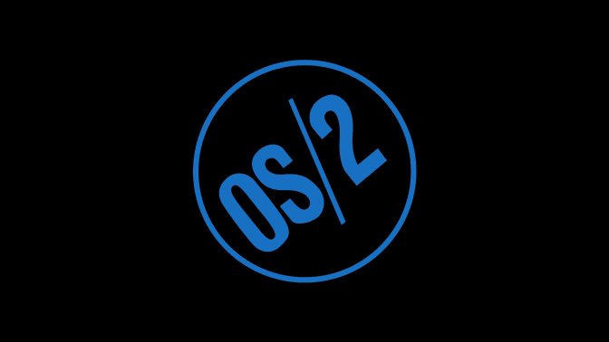


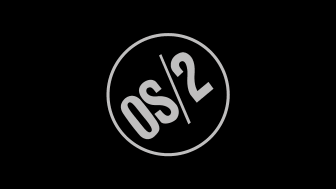


Machines
ThinkPad X210Ai
AMI Aptio V with Boot Guard on. The logo file sits outside the Boot Guard–protected area, so it can be patched. It was patched the same way patch_ami_logo.py works, and only the changed 4 KB blocks were flashed with flashrom -l layout -i logo.
ASUS PRIME B360-PLUS / B360M-A
The firmware logo was flashed with Intel FPT, writing only the logo window. Every 672×378 logo fits except Eye-Bee-M, which is about 11 KB too big for this board's logo space. The B360M-A now runs the Aptiva 2139 screen full screen at 1024×768. If the logo goes black, check that Boot Logo Display is set to Auto.
ThinkPad T530
Ran the ThinkPad × Rand bee screen (tilted IBM), applied with the custom start-up image option in Lenovo's own BIOS update package. No FPT, no dump, no unlocking. Set Boot Mode to Quick, or Diagnostic hides the splash.
Any later BIOS flash replaces the logo. Mine went when I reflashed to sort out the Wi-Fi card whitelist. That T530 now runs a custom Wi-Fi patch, and I haven't re-applied the logo on top of it yet.


ThinkPad T480s
Next on the list.
Tools
patch_ami_logo.py
Works on any AMI Aptio board. It finds the logo file, re-packs your BMP and outputs a small window to flash, with ready-to-use FPT and flashrom commands.
patch_logo.py
The original version for the ASUS PRIME B360-PLUS BIOS 3101 only. It refuses to run on any other board or BIOS version.